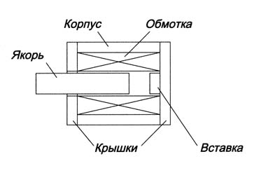
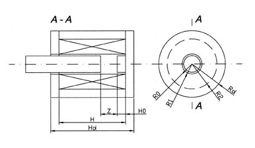
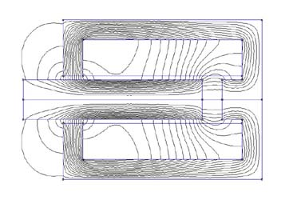
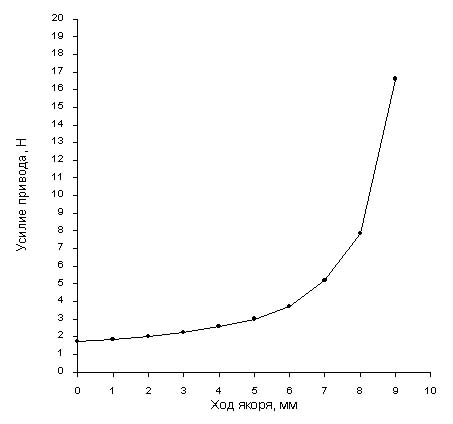
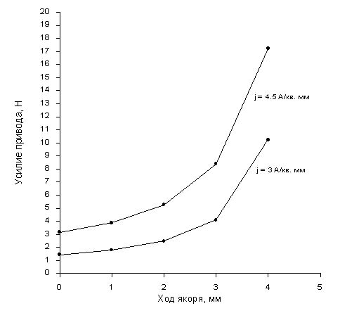

Расчет электромагнитного привода постоянного тока с втяжным якорем
1. Конструкция привода
Конструкция электромагнитного привода (ЭМП) постоянного тока с втяжным якорем [4] показана на рис. 1.1.

Рис. 1.1. Конструкция ЭМП постоянного тока с втяжным якорем.
ЭМП состоит из цилиндрического стального корпуса, в который помещается токопроводящая (обычно медная) обмотка, представляющая собой цилиндрический соленоид. С обоих сторон корпус закрывается стальными крышками. На одну из крышек устанавливается стальная вставка. В отверстие другой крышки вставляется стальной якорь. Между якорем и сердечником должен оставаться рабочий зазор. Величина рабочего зазора определяет максимальный ход якоря. При пропускании электрического тока через обмотку якорь создает тяговое усилие, стремясь втянуться внутрь обмотки. Для возврата якоря в исходное положение при отключении тока может использоваться пружина (на чертеже не показана).
2. Постановка задачи
Необходимо рассчитать зависимость максимального тягового усилия ЭМП от хода якоря. На рис. 2.1 показан чертеж ЭМП с обозначением размеров.

Рис. 2.1. Чертеж ЭМП.
Принятые обозначения:
R0 - радиус вставки (якоря)
H0 - высота вставки
R1 - внутренний радиус соленоида
R2 - внешний радиус соленоида (внутренний радиус корпуса привода)
H - высота соленоида
l - фактор упаковки
j - плотность тока в обмотке
Rd - внешний радиус корпуса привода
Hd - высота корпуса привода
Z - рабочий зазор
X - перемещение якоря от начального положения
U - напряжение питания привода
I - величина тока в проводе обмотки
F - усилие, развиваемое якорем привода
3. Расчет допустимой плотности тока в обмотках
От плотности тока в обмотке зависит мощность тепловыделения и, соответственно, температура обмотки. Эта температура не должна превышать допустимой для данной марки провода. Расчет температуры внутри обмотки и, соответственно, допустимой плотности тока в обмотках можно произвести методом конечных элементов [2, 3, 5, 6]. Величина допустимой плотности тока в проводах обмоток зависит от конструкции ЭМП и для соленоидов с толщиной обмотки (R2 - R1) до 20 - 30 мм может достигать 5 ... 8 А/мм2 при длительной работе в воздушной среде температурой до 40 0C.
Если фактор упаковки принять равным 0.6, то при плотности тока в обмоточном проводе 5 А/мм2 плотность тока в самой обмотке составит 5 ∙ 0.6 = 3 А/мм2. При этом превышение температуры обмотки над температурой окружающей среды будет не более 60 0C, а теплостойкость изоляции обмоточного провода должна быть примерно 100 0C.
Если плотность тока в проводе обмотки достигает 7.5 А/мм2 (плотность тока в обмоточном проводе 7.5 А/мм2, плотность тока в самой обмотке 4.5 А/мм2), то превышение максимальной температуры обмотки над температурой окружающей среды при длительной работе будет не более 120 0C. При намотке необходимо использовать провод с изоляцией соответствующей теплостойкости.
4. Расчет максимального тягового усилия ЭМП
Расчет распределения магнитного поля и возникающих при этом усилий можно произвести методом конечных элементов [2, 3, 5, 6]. Распределение магнитного поля в ЭМП показано на рис. 4.1.

Рис. 4.1. Распределение магнитного поля в ЭМП.
5. Расчет обмотки ЭМП
Обмотка ЭМП представляет собой цилиндрический соленоид. Его расчет может быть выполнен разными способами, например, с помощью программы Coil [1]. При заданных размерах соленоида и для заданного напряжения источника питания необходимо подобрать такой диаметр обмоточного медного провода, чтобы плотность тока в самом проводе была как можно ближе к полученному при расчете максимально допустимой плотности тока значению (например, 5 А/мм2 ).
6. Примеры расчета
Пример 1. Параметры ЭМП:
R0 = 5 мм
H0 = 5 мм
R1 = 6 мм
R2 = 15 мм
H = 40 мм
l = 0.6
j = 3 А/мм2
Rd = 20 мм
Hd = 50 мм
U = 12 В
| Зазор Z, мм | 10 | 9 | 8 | 7 | 6 | 5 | 4 | 3 | 2 | 1 |
| Ход X, мм | 0 | 1 | 2 | 3 | 4 | 5 | 6 | 7 | 8 | 9 |
| Усилие F, Н | 1.71 | 1.84 | 2.02 | 2.25 | 2.57 | 3.00 | 3.72 | 5.18 | 7.86 | 16.60 |

Рис. 6.1. Зависимость усилия, развиваемого ЭМП, от хода якоря.
При питании ЭМП от источника напряжением 12 вольт обмотку следует намотать медным проводом диаметром (без изоляции) 0.27 мм. Если фактор упаковки равен 0.6, то число витков будет равно 3770, сопротивление - 73 Ом, индуктивность - 92 мГн. Потребляемый ток от источника с выходным напряжением 12 В составит 0.17 А, рассеиваемая мощность около 2 Вт.
Пример 2. Параметры ЭМП:
R0 = 5 мм
H0 = 5 мм
R1 = 6 мм
R2 = 13 мм
H = 36 мм
l = 0.6
j = 3 А/мм2 или 4.5 А/мм2
Rd = 15 мм
Hd = 40 мм
U = 24 В
| Зазор Z, мм | 5 | 4 | 3 | 2 | 1 |
| Ход X, мм | 0 | 1 | 2 | 3 | 4 |
| Усилие F, Н для плотности тока 3 А/мм2 | 1.44 | 1.79 | 2.47 | 4.10 | 10.23 |
| Усилие F, Н для плотности тока 4.5 А/мм2 | 3.16 | 3.88 | 5.27 | 8.38 | 17.22 |

Рис. 6.2. Зависимость усилия, развиваемого ЭМП, от хода якоря.
При питании ЭМП от источника напряжением 24 вольта при допустимой плотности тока в обмотке 3 А/мм2 обмотку следует намотать медным проводом диаметром (без изоляции) 0.16 мм. Если фактор упаковки равен 0.6, то число витков будет равно 7520, сопротивление - 373 Ом, индуктивность - 345 мГн. Потребляемый ток от источника с выходным напряжением 24 В составит 0.064 А, рассеиваемая мощность около 1.5 Вт.
При питании ЭМП от источника напряжением 24 вольта при допустимой плотности тока в обмотке 4.5 А/мм2 обмотку следует намотать медным проводом диаметром (без изоляции) 0.24 мм. Если фактор упаковки равен 0.6, то число витков будет равно 3340, сопротивление - 74 Ом, индуктивность - 68 мГн. Потребляемый ток от источника с выходным напряжением 24 В составит 0.33 А, рассеиваемая мощность около 8 Вт.
Если есть запас по развиваемому усилию, то можно соответственно уменьшить напряжение питания, при этом облегчится тепловой режим работы обмотки привода.
По вопросам расчета конкретных конструкций ЭМП обращайтесь к автору (см. раздел Контактная информация).
Ссылки:
04.09.2007
07.09.2007
Альтернативные источники
энергии
Компьютеры и
Интернет
Магнитные поля
Механотронные системы
Перспективные
разработки
Электроника и
технология